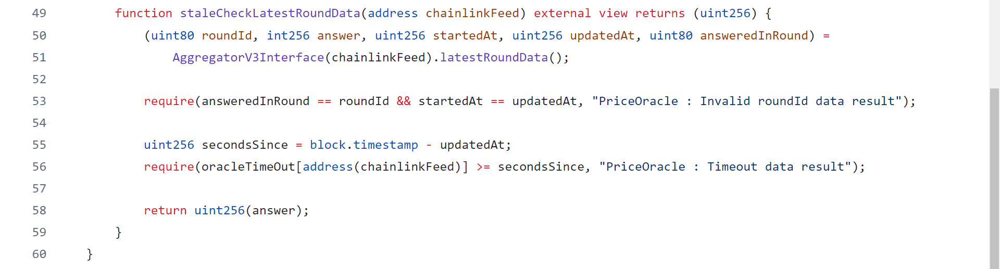
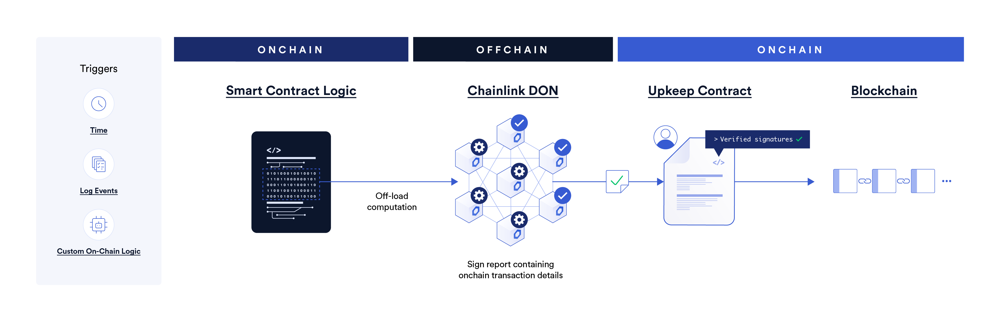
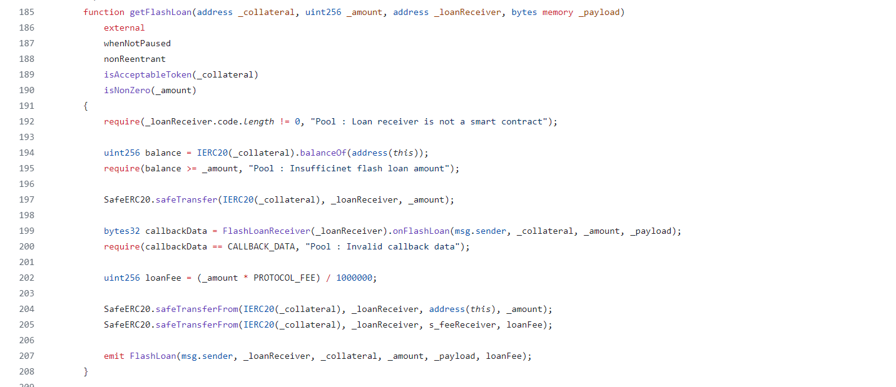
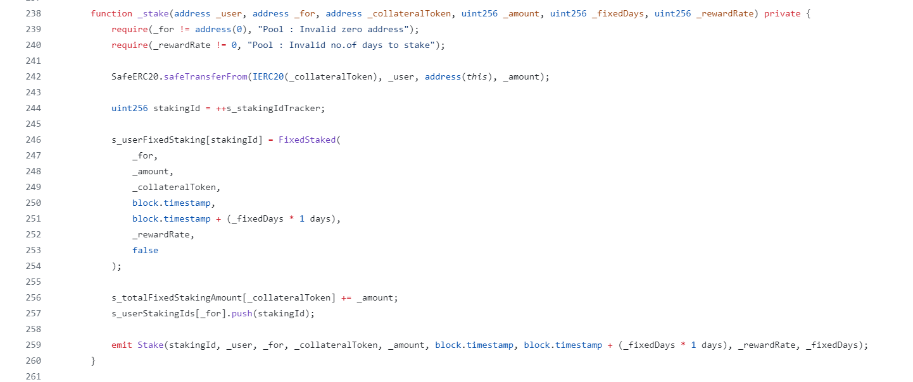

>> RCR-STAKE
Hello WEB3, In this blog series, we are learning how to build a fixed staking pool. It's a very interesting to say that I have used so make tools and others to build this project with multiple concepts like stable coin, air drops, chainlink data feeds, automation and Verified Random Function(VRF). These are the key functionalities in this project.
- Any user can stake some pool accepted collateral for some fixed number of days and earn the rewards for staking as Decentralized Stable Coin(DSC).
- These DSC are purchase through the DSCEngine contract also.
- DSC tokens are controlled by the DSC Engine contract.
- And also user can register for the airdrop from the DSCAirdrop contract and after every certain period of time chainlink automatically trigger the announce winner function and send the DSC tokens to that winner.
- During registration for Airdrop protocol takes some amount of registration fess based on the reward amount of that particiular airdrop.
- In fixed staking pool if user stake the collateral for more period he will get more reward rate.
- DCS library helps to make calculation for DSCEngine and the calculations are done in assembly languague to reduce the gas fee.
- Here we used Chainlink data feeds to get the current price of the collateral in the market.
- Verified Random Function(VRF) is used to generate the random number for the airdrop winner.
- Automation is used to automate the process of airdrop winner announcement.
- DSC Engine contract mint the DSC tokens on over collateralization of 200% due to avoid the price inflation attack from the protocol.
- After completing of staking period of the user, he can able to withdraw the staked and collateral and earn some reward tokesn as DSC tokens.
- In fixed pool user can able to take flash loan by implementing FlashLoanReceiver contract.
- For any flash loan protocol takes 0.3% as fees, these fees are received by the fee receiver address.
- To approve the tokens to spend, protocol accepts gas less approvals by making signature.
I recommend to go through the ethereum101, solidity 101, solidity 201 modules of the Secureum bootcamp and learn how stable coin works by @patric_collins and staking maths works on youtube like @smart_contract_programmer and externally it is recommend to learn how chainlink dataFeeds, Automation and VRF works.
Clone the repo :
>> Repository Structure
- intrefaces
- AggregatorV3Interface.sol
- FlashLoanReceiver.sol
- IDSCEngine.sol
- IPriceOracle.sol
- libraries
- DCSLibrary.sol
- stablecoin
- DSC.sol
- DSCAirdrop.sol
- DSCEngine.sol
- staking
- FixedPool.sol
- utils
- PriceOracle.sol
>> Price Oracle
Chainlink Data Feeds provide data that is aggregated from many data sources by a decentralized set of independent node operators. The Decentralized Data Model describes this in detail. However, there are some exceptions where data for a feed can come only from a single data source or where data values are calculated.
To get the price of the collateral we used chainlink price feeds. For different collaterals we use same AggregatorV3Interface contract and pass the respective price feed address. If chainlink pricefeeds were hacked we use same interface to return price using Uniswap oracle. So in this project we get the price of collateral through calling interface of IPriceOracle.sol
Here is the function code which returns the price of collateral.
We can see that at line 53, 56 we make some checks regarding to whether the oracle is correctly working or not.
- At line 53 we check the current roundIds and undated roundIds are correct or not.
- At line 56 we are checking for stale timeout error.
To create a price Orcale using chainlink we have to make subscription and add consumer to that subscription and make some funds(Link tokens) to the subscriptionId.
Here is the guide to price oracle using chainlink.
>> Chainlink Automation
Chainlink Automation is a decentralized automation framework that allows developers to build Automate your smart contracts using a secure and hyper-reliable decentralized network that uses the same external network of node operators that secures billions in value. Building on Chainlink Automation will accelerate your innovation, save you time and money, and help you get to market faster so you don't have to deal with the setup cost, ongoing maintenance, and risks associated with a centralized automation stack.
To learn more about how the Chainlink Automation Network automates your smart contracts, visit the Concepts and Architecture pages. You can also learn more through our additional Automation resources.
Chainlink Automation will reliably execute smart contract functions using a variety of triggers. Explore the examples below to see how Chainlink Automation works for each type of trigger. Before you begin, you will need an active cryptocurrency wallet such as Metamask.
- Time-based trigger: Use a time-based trigger to execute your function according to a time schedule.
- Custom logic trigger: Use a custom logic trigger to provide custom solidity logic that Automation Nodes evaluate (offchain) to determine when to execute your function onchain.
- Log trigger: Use log data as both trigger and input.
You can go through to set up for Automation contract.
>> Chainlink VRF
Chainlink VRF (Verifiable Random Function) is a provably fair and verifiable random number generator (RNG) that enables smart contracts to access random values without compromising security or usability. For each request, Chainlink VRF generates one or more random values and cryptographic proof of how those values were determined. The proof is published and verified onchain before any consuming applications can use it. This process ensures that results cannot be tampered with or manipulated by any single entity including oracle operators, miners, users, or smart contract developers.
Use Chainlink VRF to build reliable smart contracts for any applications that rely on unpredictable outcomes:
- Building blockchain games and NFTs.
- Random assignment of duties and resources. For example, randomly assigning judges to cases.
- Choosing a representative sample for consensus mechanisms.
>> Two methods to request randomness
- Subscription: Create a subscription account and fund its balance with either native tokens or LINK. You can then connect multiple consuming contracts to the subscription account. When the consuming contracts request randomness, the transaction costs are calculated after the randomness requests are fulfilled and the subscription balance is deducted accordingly. This method allows you to fund requests for multiple consumer contracts from a single subscription.
- Direct funding: Consuming contracts directly pay with either native tokens or LINK when they request random values. You must directly fund your consumer contracts and ensure that there are enough funds to pay for randomness requests.
In our project we used Subscription method to generate secure random numbers.
>> DCSLibrary
DSC Library is used to convert the usd amount to collateral amount and viceversa using assembly language to reduce the transaction gas.
>> Functions
Return the collateral value in terms of USD amount using chainlink price feeds.
Return the collateral amount by giving input as UDS value with decimals of 18.
>> Decentralized Stable Coin(DSC)
Stablecoins are a type of cryptocurrency designed to maintain a stable value relative to a specific asset, typically a fiat currency like the US dollar or a commodity like gold. They aim to combine the benefits of cryptocurrencies (such as decentralization and security) with the stability of traditional financial assets
>> How do stablecoins work?
Stablecoins generally work the same across the board: They are cryptocurrencies minted on a blockchain that users can buy, sell and trade on an exchange just like any other crypto coin. People can store stablecoins in their hot wallets and/or cold storage devices like they would bitcoin or any altcoin.
In order to have integrity, most stablecoins are linked to a reserve of external assets of some kind, whether it be a stash of fiat currency, commodities like gold or debt instruments like commercial paper. In most cases, the company or entity that develops the stablecoin owns reserves equal to the amount of stablecoins it has in circulation. This is such that any stablecoin holder should be able to redeem one stablecoin token for one dollar at any time.
>> The four types of stablecoins
There are four different types of stablecoins, each with its own way of fixing the value of the tokens to a stable figure.
- Fiat-backed
- Cryptocurrency-backed
- Commodity-backed
- Algorithmic
In this project we used Algorithmic Stable coin, this category of stablecoins uses algorithms to modulate the supply based on its market demand. In short, these algorithms automatically burn (permanently remove coins from circulation) or mint new coins based on the fluctuating demand for the stablecoin at any given time.
You can read more Algorithmic Stable coin and What are stable coins.
>> Stable Coin Contracts
>> DSC.sol
DSC contract is the ERC-20 token contract. The minting and burning of tokens are controlled by the DSCEngine logic. DSC.sol implements Ownable contract and the owner of DSC contract is DSCEngine contract.
The DSC contract has the following functions:
- mint() : This function is called to mint the DSC tokens.
- burn() : This function is used to burn the DSC Tokens.
>> DSCEngine.sol
DSCEngine contract is the logic contract that controls the minting and burning of DSC tokens. In this Engine contract we used Algorithmic Stable coin login to mint and burn DSC by depositing of collateral by maintaining a health factor of over collateralization of 200%.
DSCEngine contract is Pausable and Re-entrancy protected contract.
>> DSCAirdrop.sol
DSCAirdrop refer to the distribution of DSC Tokens to a large number of wallet addresses. This is typically done to promote the DCS tokens.
In DSCAirdrop user will register for the airdrop with entry fees set by the owner. After completing of time period of airdrop the chainlink-automation calls automatically from the oracle and oracle callback the performUpkeep() function, inside this function we generate a secure random number using chainlink VRF and fulfillRandomWords() announce the winner after calling of requestRandomWords() function.
>> Fixed Pool
Fixed pool is a decentralized pool, where user can stake their collateral tokens(which are accepted by the pool) and get the reward as the DSC tokens. User will stake the collateral for fixed days and that tokens are locked for that period. If the user stake the collateral for long period, they will get high reward rate that normal one.
- User can able to take the flash loan by implementing FlashLoanReceiver contract.
- Fixed pool is a Pausable functionalities where in emeregency or any hacks owner of the pool can pause the user called functions.
- User can implement multicall function.
- Fixed pool functions are protected by Re-entrancy guard.
- To transfer the ERC20 tokens we used Openzeppelin SafeERC20 contract.
- User can stake, redeem collateral and withdraw rewards.
- User can approve the tokens with gas-less token transfers using permit signature.
>> Events
- FlashLoan : Emits when any one take FlashLoan successfully.
- Stake : Emits when any user satke the collateral into the pool.
- Redeemed : Emits when the user redeem his collateral after completing of their staking period.
- WithdrawRewards : Emist when ever withdraw function is called.
event FlashLoan(
address indexed executor,
address indexed loanReceiver,
address collateral,
uint256 amount,
bytes payload,
uint256 loanFee
);
event Stake(
uint256 indexed stakingId,
address indexed user,
address indexed forTo,
address collateralToken,
uint256 amount,
uint256 stratTime,
uint256 endTime,
uint256 rewardRate,
uint256 fixedDays
);
event Redeemed(
address indexed user,
uint256 indexed stakingId,
address collateral,
uint256 amount,
address collateralReceiver,
address rewardReceiver
);
event WithdrawRewards(address indexed user, address indexed dscReceiver, uint256 amount);
>> Modifiers
Checks whether the collateral token is accepted by the pool or not.
Check whether the input number is not a zero.
>> Functions
>> Owner callable functions
This is function is used to set the fees receiver address. Where the fees is collected from flash-loan.
This function is used to add a new collateral token to the pool to accept for staking.
This function is used to remove a collateral token from the pool. After removing collateral no longer the pool accept the collateral to stake.
This function is used to update the fixed reward rate of the pool.
This function is used to pause the pool when any hacks occured on pool. It pause all the user callable functions.
This function is used to unpause the pool.
>> Read only functions
This function is used to get the pending reward of the user for their staked collateral.
This function is used to get the staking data of the user through his stakingId.
>> User/Stakerr callable functions
This function is used to get the flash loan for the user.

- At first we have to check whether the loan receiver is a smart contract or not . We have to accept only smart contracts to accept the loan amount to receive.
- User can take the flash loan upto the maximum balance of collateral in this pool.
- At line 197 We send the amount of tokens that the user want to take as flash loan.
- After sending tokens we are checking the call back (keccak256( abi.encodePacked( "onFlashLoan(address _caller, address _collateral, uint256 _amount, bytes memory _payload)") );) whether the function is called successfully or not, At line 200.
- After that at line 204, 205 pool recollect the sended tokens with fee of 0.3%, The fee is send to fee receive adddress and flash-loan amount is sended to pool.
The core logic of staking tokens is executed inside the _stake function. Here is the code : 
This function is used to stake the tokens by making another transaction for approving the tokens to spend.
In this function we can make a single transaction for approving and staking by making signature to send tokens for the pool.
This function is used to redeem the collateral from the pool. This is called only after completing after that staking period and after that isRedeemed state is updated to true.
This function is used to withdraw the rewards from the pool. The reward tokens are the DSC tokens.
>> Security Considerations
- Ownership and Permissions: Implement robust ownership and permission mechanisms to control who can interact with the contract’s critical functions.
- Reentrancy Guards: Implement reentrancy guards using techniques such as the checks-effects-interactions pattern or the ReentrancyGuard contract from OpenZeppelin.
- Parameter Checks: Validate and sanitize all input parameters to prevent attacks such as integer overflow/underflow, and invalid addresses.
- Flash Loan Attacks: Protect against flash loan attacks by designing the protocol to handle sudden and large volume changes.
- Event Emission: Emit events for critical operations to provide transparency and traceability.
- Pausable Contract: Implement a Pausable mechanism to halt contract operations in case of an emergency.
- Chainlink-automation : Implement chainlink-automation for calling functions automatically using chainlink oracles.
- chainlink VRF : Implementing chainlink Verifiable random function to generate a secure random function.
- Chainlink Price Feeds : Implementing chainlink price feeds to get the collateral price in market using chainlink oracles.
- Stale price manipulated : Even if the chainlink price feed oracle is manipulated we can stop the transactions to get data from chainlink.
- Assembly maths : Writing secure assembly to calculate the output for maths functions.
- Collateral Management: Implemented mechanisms to handle collateral volatility and ensure over-collateralization.